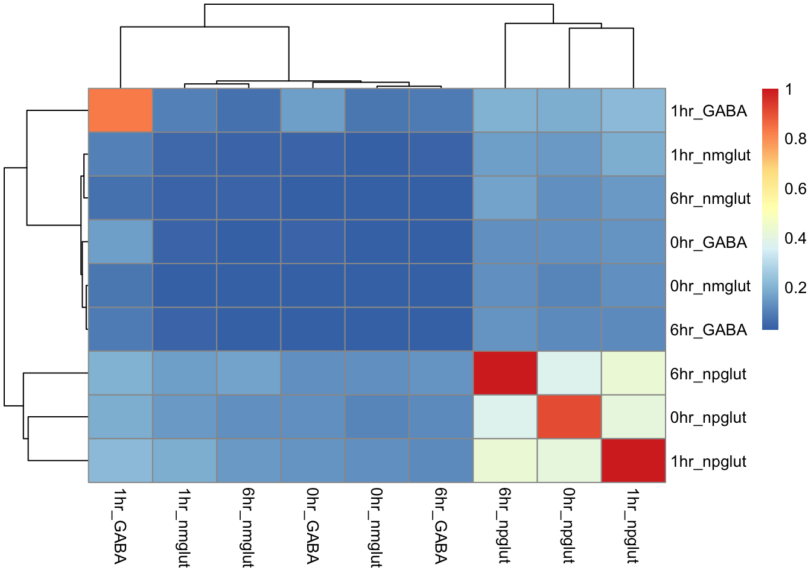
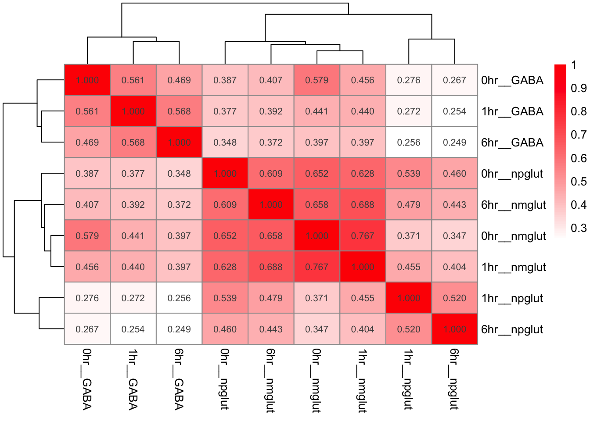
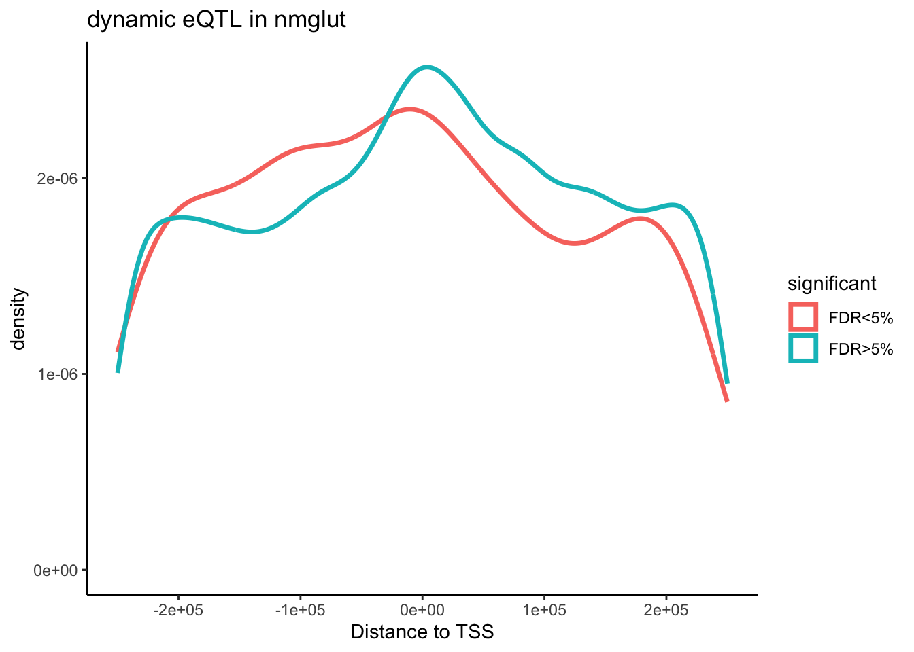
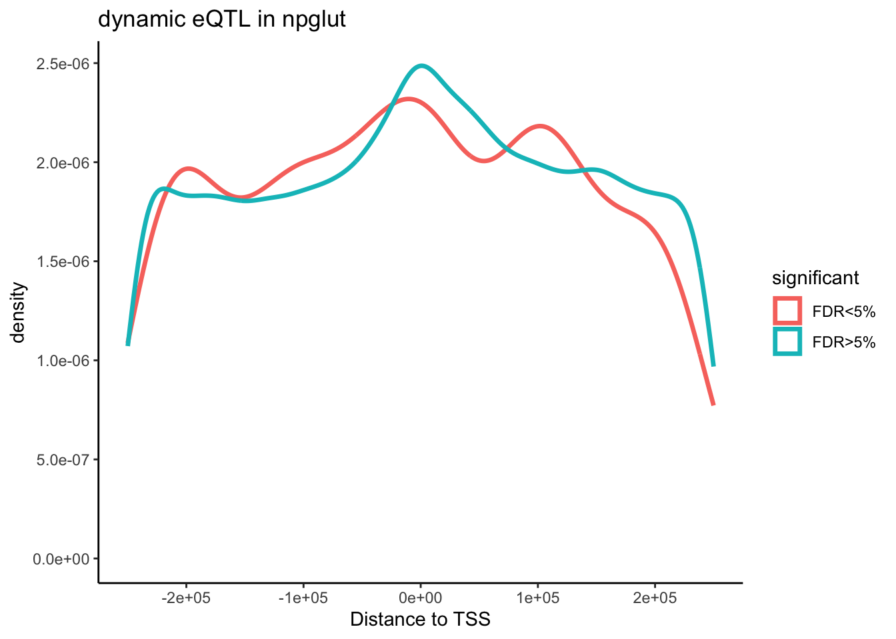
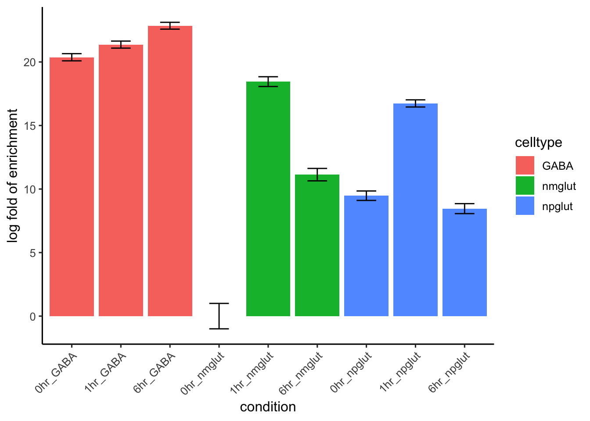
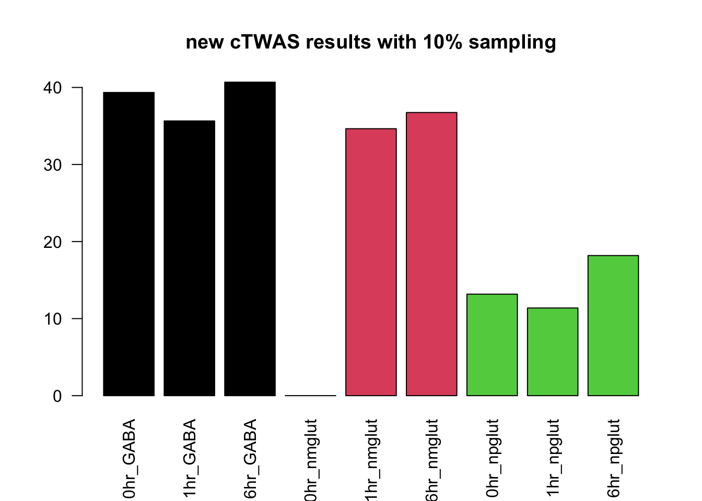
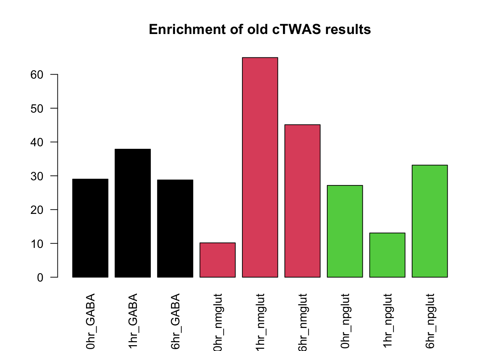
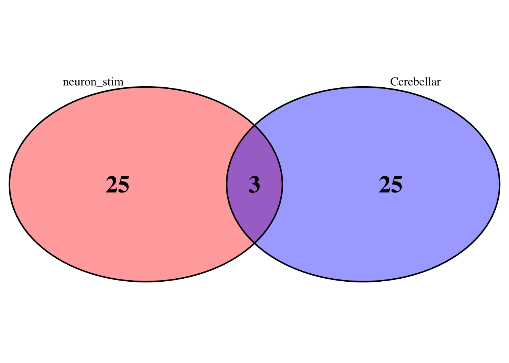

revision
Lifan Liang
2025-06-19
Last updated: 2025-12-11
Checks: 7 0
Knit directory: neuron_stim_eQTL100/
This reproducible R Markdown analysis was created with workflowr (version 1.7.2). The Checks tab describes the reproducibility checks that were applied when the results were created. The Past versions tab lists the development history.
Great! Since the R Markdown file has been committed to the Git repository, you know the exact version of the code that produced these results.
Great job! The global environment was empty. Objects defined in the global environment can affect the analysis in your R Markdown file in unknown ways. For reproduciblity it’s best to always run the code in an empty environment.
The command set.seed(20231109) was run prior to running
the code in the R Markdown file. Setting a seed ensures that any results
that rely on randomness, e.g. subsampling or permutations, are
reproducible.
Great job! Recording the operating system, R version, and package versions is critical for reproducibility.
Nice! There were no cached chunks for this analysis, so you can be confident that you successfully produced the results during this run.
Great job! Using relative paths to the files within your workflowr project makes it easier to run your code on other machines.
Great! You are using Git for version control. Tracking code development and connecting the code version to the results is critical for reproducibility.
The results in this page were generated with repository version e949dc1. See the Past versions tab to see a history of the changes made to the R Markdown and HTML files.
Note that you need to be careful to ensure that all relevant files for
the analysis have been committed to Git prior to generating the results
(you can use wflow_publish or
wflow_git_commit). workflowr only checks the R Markdown
file, but you know if there are other scripts or data files that it
depends on. Below is the status of the Git repository when the results
were generated:
Ignored files:
Ignored: .DS_Store
Ignored: .RData
Ignored: .Rhistory
Ignored: data/.DS_Store
Ignored: data/single_group_ctwas/.DS_Store
Untracked files:
Untracked: Fig15SE_dynamic_count_eqtl_ctwas.pdf
Untracked: GTEx_vs_SCZ.pdf.2024-08-26_21-04-15.log
Untracked: GTEx_vs_SCZ.png
Untracked: GTEx_vs_SCZ.tiff
Untracked: GTEx_vs_SCZ.tiff.2024-08-26_21-04-43.log
Untracked: Rplot.png
Untracked: VennDiagram.2025-12-09_12-31-07.log
Untracked: data/pi1_vs_jb_dopamin.txt
Untracked: data/pi1_with_gtex.txt
Untracked: geneMapping.rds
Untracked: mouse_sesenory_experince_inh.csv
Untracked: mouse_sesenory_experince_inh.csv.numbers
Untracked: plot4pdf.R
Note that any generated files, e.g. HTML, png, CSS, etc., are not included in this status report because it is ok for generated content to have uncommitted changes.
These are the previous versions of the repository in which changes were
made to the R Markdown (analysis/revision.Rmd) and HTML
(docs/revision.html) files. If you’ve configured a remote
Git repository (see ?wflow_git_remote), click on the
hyperlinks in the table below to view the files as they were in that
past version.
| File | Version | Author | Date | Message |
|---|---|---|---|---|
| Rmd | e949dc1 | Lifan Liang | 2025-12-11 | wflow_publish("analysis") |
| html | 05bc995 | Lifan Liang | 2025-12-09 | Build site. |
| Rmd | 10addbf | Lifan Liang | 2025-12-09 | wflow_publish(c("analysis", "data")) |
| html | 72829dd | Lifan Liang | 2025-10-25 | Build site. |
| Rmd | 9591c0d | Lifan Liang | 2025-10-25 | wflow_publish("analysis") |
| html | 82738f5 | Lifan Liang | 2025-07-14 | Build site. |
| Rmd | 8cc320f | Lifan Liang | 2025-07-14 | wflow_publish(c("analysis", "data")) |
| html | 3a1b036 | Lifan Liang | 2025-07-14 | Build site. |
| Rmd | c14d3c0 | Lifan Liang | 2025-07-14 | wflow_publish(c("analysis", "data")) |
| html | 0120460 | Lifan Liang | 2025-07-14 | Build site. |
| Rmd | d636d78 | Lifan Liang | 2025-07-14 | wflow_publish(c("analysis", "data", "docs")) |
| html | d636d78 | Lifan Liang | 2025-07-14 | wflow_publish(c("analysis", "data", "docs")) |
| html | bcec945 | Lifan Liang | 2025-06-28 | Build site. |
| Rmd | 81ffbde | Lifan Liang | 2025-06-28 | wflow_publish(c("analysis", "data")) |
Power comparison between resting states and stimulating states
We took 79 cell lines that have relatively high number of cells across all 9 contexts to rerun eQTL mapping (MatrixeQTL). Below is the count of eGenes for the three cell types in GABA.
Summary of eQTL correlation with other studies.
rb is essentially estimating pairwise correlation of genetic effect between two conditions after correcting residual correlation. We implemented the procedure following the description by Qi, et al (PMID: 29891976). Number in the bracket is standard error.
eQTL correlation within our gene expression

eQTL correlation with GTEx brain tissues


eQTL correlation with psychENCODE2 prenatal brain

Pi1 estimate
eQTL correlation with doparminergic neurons
rb estimate and Pi1 estimate with Bryois, et al.
Bryois, et al has combined the Roche datasets and the ROSMAP dataset to map single cell eQTL for nine cell types.
Pericytes has less than 30 cis-eQTLs and Endothelial cells only have 100 cis-eQTLs. rb estimate is probably not reliable. We removed these two cell types.

We have ascertained the nominal P values of our eQTLs (FDR<5%) in Bryois eQTL for each cell type. The non-null proportion of the P values (Pi1) were shown as below.

MASH results
We extracted top QTLs for each molecular trait (i.e. gene or peak) with FDR < 20% for each condition and took a union. And then we did LD clumping with the union of eQTL within a molecular trait. QTLs are ranked by nominal P values in 6hr NPGlut for both caQTL and eQTL. \(R^2\) cutoff is 0.1. After LD clumping, we have 75149 eQTLs for 14235 genes and
eQTL results
Loading required package: ashrPairwise sharing
We used the default method in MASH. For each pair of tissues, first
identify the effects that are significant (by lfsr<lfsr_thresh) in at
least one of the two tissues. Then compute what fraction of these have
an estimated (posterior mean) effect size within a factor
factor of one another. Given the sharing matrix, we perform
hierarchical clustering with Ward criteria.
sharing.e <- get_pairwise_sharing(res.e)
values <- as.data.frame(sharing.e)
values[] <- lapply(values, sprintf, fmt="%.3f")
pheatmap(sharing.e, display_numbers = values,
color=colorRampPalette(c("white", "red"))(100),
clustering_method = "ward.D2")
Most eQTLs are condition specific. eQTLs shared by two conditions and all conditions are the second highest.

The upset plot showed similar information. eQTLs are distributed into these catetegories in order: (1) Shared by all; (2) condition specific; (3) GABA-specific eQTL; (4) NPglut stimulation specific; (5) GABA stimulation specific; (6) Glut specific.
Warning: Using `size` aesthetic for lines was deprecated in ggplot2 3.4.0.
ℹ Please use `linewidth` instead.
ℹ The deprecated feature was likely used in the ComplexUpset package.
Please report the issue at
<https://github.com/krassowski/complex-upset/issues>.
This warning is displayed once every 8 hours.
Call `lifecycle::last_lifecycle_warnings()` to see where this warning was
generated.
We also obtained the mixture proportions of all covariance patterns. Below is a barplot showing all the patterns with proportion > 1%.
The pattern that explains 22.5% of mixture was PCA_1.
The covariance matrix was shown as below:
And the corresponding 1st eigen vector (52.7% PVE) is:


caQTL results
Pairwise sharing among conditions:

Distribution of caQTL across the number of conditions they are significant in. The distribution is similar to the one in eQTL.

Distribution of caQTLs across different intersections, consisting of condition-specific caQTLs, shared by all, and cell type-specifc caQTLs.

tPCA covariance matrix has the highest mixture
proportion (16.8%).

The eigen vector for this covariance matrix (72.5% PVE).



Dynamic eQTL testing
Dynamic eQTL testing by CellRegMap
Nominal P values for highlighted dynamic eQTL
- NPglut: ADAM10 | rs6494026 P value: 4.139992e-13
- GABA: CROT | rs13233308 P value: 0.295749
- NMglut: CPT1C | rs12104272 P value: 0.2200463
P values for CROT and CPT1C (nominated by cTWAS) do not have significant P values. But there is a SNP in weak LD that is significant for nominal values for GABA CROT (rs6946379) and CPT1C
Dynamic eQTL expanded to FDR<20% in marginal association testing
We expanded the scope of eQTL testing to FDR<20% with LD pruning (\(R^2<0.1\)). So that multiple testing burden is reduced. P values of eQTLs within a gene were corrected with Bonferroni FWER. Benjamini Hochberg FDR was applied across genes. Overall, we found 630, 953, and 1110 dynamic eQTLs in nmglut, GABA, and npglut respectively. Dynamic eQTLs are less enriched at TSS compared to eQTLs not significant for dynamic testing.

| Version | Author | Date |
|---|---|---|
| 05bc995 | Lifan Liang | 2025-12-09 |

Dynamic eQTL testing by interaction testing
We simply used the fixed interaction effect model to test the interaction effect between genotypes and stimulation for each cell type separately:
\[ expression \sim age+sex+disease+\sum_i^5 genotypePC + \sum_j^{15}expressionPC +genotype + timepoint + genotype \times timepoint \]
Please note that we tested early response (1hr) and late response (6hr) against the resting state separately.
Enrichment with upregulated peaks in stimulating states.
library(ggplot2)
res.tab <- read.table("data/pairwise_enrichment.txt",header=T)
enrich.df <- res.tab
enrich.df$log2OR <- log2(exp(res.tab$estimate))
enrich.df$lower <- log2(exp(res.tab$low))
enrich.df$upper <- log2(exp(res.tab$high))
enrich.df$se <- (enrich.df$upper - enrich.df$lower)/2/qnorm(0.975)
enrich.df$pval <- 2*(1-pnorm(enrich.df$log2OR/enrich.df$se))
enrich.df$annot <- sapply(strsplit(enrich.df$term,"\\."), function(x){x[1]})
enrich.df$annot <- gsub('_', ',', enrich.df$annot)
ggplot(enrich.df, aes(x = log2OR, y = annot)) +
geom_errorbarh(aes(xmin = lower, xmax = upper), height = 0.2, color = "grey50") +
geom_point(size = 4) +
geom_vline(xintercept = 0, linetype = 'dashed', color = 'black') +
# Add p-values with larger font and more space
geom_text(aes(x = upper + 0.3, label = paste0("p=", signif(pval, 3))),
hjust = 0, size = 4) +
theme_minimal() +
labs(x = 'log2 Odds Ratio', y = 'Annotation') +
theme(
legend.position = 'top',
legend.direction = 'horizontal',
legend.title = element_blank(),
axis.text.x = element_text(size = 10), # Bigger x-axis tick labels
axis.text.y = element_text(size = 10) # Bigger y-axis tick labels
) +
# Expand x-axis to make room for labels
scale_x_continuous(expand = expansion(mult = c(0.05, 0.2))) +
coord_cartesian(clip = "off")Warning: `geom_errorbarh()` was deprecated in ggplot2 4.0.0.
ℹ Please use the `orientation` argument of `geom_errorbar()` instead.
This warning is displayed once every 8 hours.
Call `lifecycle::last_lifecycle_warnings()` to see where this warning was
generated.`height` was translated to `width`.
| Version | Author | Date |
|---|---|---|
| 05bc995 | Lifan Liang | 2025-12-09 |
Updated cTWAS results
We tried to rerun the analysis with updated version of cTWAS. So that
enrichment may have standard error. However, percentage of h2g decreased
from 11% to 6%. Sheng reported that old results were inflated because of
sampling 10% of GWAS SNPs to estimate prior parameters
(thin=0.1). Updated results do not require sampling any
more. We have tried different thinning parameters (i.e. 10%, 20%, 50%,
100%). Results show consistent decrease of h2g
h2g decrease as sampling ratio of GWAS SNPs increased

| Version | Author | Date |
|---|---|---|
| 05bc995 | Lifan Liang | 2025-12-09 |
Moreover, distribution of h2g across conditions changed a lot compared to original results. NMglut has much less heritability, and conditions of early response have higher h2g in general.
Enrichment of cTWAS results without thinning

| Version | Author | Date |
|---|---|---|
| 05bc995 | Lifan Liang | 2025-12-09 |

| Version | Author | Date |
|---|---|---|
| 05bc995 | Lifan Liang | 2025-12-09 |

Putative risk genes from different thinning
For the gene with PIP > 50% in previous results, we compared their PIP in the updated results.

| Version | Author | Date |
|---|---|---|
| 05bc995 | Lifan Liang | 2025-12-09 |
Below is the heatmap of 28 putative risk gene with PIP>50% in updated cTWAS results without thinning. Highlighted genes such as CPT1C, CROT, and NAGA are still there. NGEF nominated in NMglut in previous results have PIP<50%.
2025-12-11 15:10:54 INFO::Annotating susie alpha result...
2025-12-11 15:10:54 INFO::Map molecular traits to genes.2025-12-11 15:10:54 INFO::Compute combined PIPs...
The updated results shared 3 genes with Cerebellar (i.e. SERPINI1, FOXN2, ZNF823). ZNF823 is the only gene shared by all GTEx brain tissues.
library(VennDiagram)Loading required package: gridLoading required package: futile.loggerp1 <- venn.diagram(list(neuron_stim=pip1$gene_name, Cerebellar=GTEx.gene$Brain_Cerebellar_Hemisphere),
filename=NULL, cat.pos=c(-20,20), alpha=0.4, fill=c("red","blue"),fontface = "bold", cex=2)
grid.newpage()
grid.draw(p1)
| Version | Author | Date |
|---|---|---|
| 05bc995 | Lifan Liang | 2025-12-09 |
eGenes with other stimulus
Compared with mouse sensory experience DEGs from Jubao:
- a Early response genes (|log2(FC)|>1 , FDR <0.05) whose expression increases
- b Early response genes (|log2(FC)|>1 , FDR <0.05) whose expression decreases
- c Late response genes (|log2(FC)|>1 , FDR <0.05) whose expression increases
- d Late response genes (|log2(FC)|>1 , FDR <0.05) whose expression decreases
DEGs with excitatory neuron cells?
Out of 108 DEGs (log fold change > 1 and FDR<5%), 61 of them was an eQTL in at least one condition.
DEGs with inhibitory neuron cells?
Out of 102 DEGs (log fold change > 1 and FDR<5%), 52 of them was an eQTL in at least one condition.
Number of risk genes discovered by cTWAS with different SCZ GWAS

sessionInfo()R version 4.1.2 (2021-11-01)
Platform: x86_64-apple-darwin17.0 (64-bit)
Running under: macOS Big Sur 10.16
Matrix products: default
BLAS: /Library/Frameworks/R.framework/Versions/4.1/Resources/lib/libRblas.0.dylib
LAPACK: /Library/Frameworks/R.framework/Versions/4.1/Resources/lib/libRlapack.dylib
locale:
[1] en_US.UTF-8/en_US.UTF-8/en_US.UTF-8/C/en_US.UTF-8/en_US.UTF-8
attached base packages:
[1] grid stats graphics grDevices utils datasets methods
[8] base
other attached packages:
[1] DT_0.34.0 biomaRt_2.50.3 VennDiagram_1.7.3
[4] futile.logger_1.4.3 ctwas_0.5.34 dplyr_1.1.2
[7] ComplexUpset_1.3.3 ggplot2_4.0.1 mashr_0.2.69
[10] ashr_2.2-54 pheatmap_1.0.13 workflowr_1.7.2
loaded via a namespace (and not attached):
[1] BiocFileCache_2.2.1 plyr_1.8.8
[3] lazyeval_0.2.2 crosstalk_1.2.2
[5] BiocParallel_1.28.3 GenomeInfoDb_1.30.1
[7] LDlinkR_1.4.0 digest_0.6.31
[9] invgamma_1.2 ensembldb_2.18.4
[11] htmltools_0.5.9 SQUAREM_2021.1
[13] magrittr_2.0.4 memoise_2.0.1
[15] tzdb_0.3.0 Biostrings_2.62.0
[17] readr_2.1.4 AMR_3.0.1
[19] matrixStats_1.5.0 locuszoomr_0.3.8
[21] prettyunits_1.2.0 colorspace_2.1-2
[23] blob_1.2.4 rappdirs_0.3.3
[25] ggrepel_0.9.3 xfun_0.54
[27] callr_3.7.6 crayon_1.5.3
[29] RCurl_1.98-1.17 jsonlite_2.0.0
[31] zoo_1.8-14 glue_1.8.0
[33] gtable_0.3.6 zlibbioc_1.40.0
[35] XVector_0.34.0 DelayedArray_0.20.0
[37] BiocGenerics_0.40.0 abind_1.4-8
[39] scales_1.4.0 futile.options_1.0.1
[41] mvtnorm_1.1-3 DBI_1.2.3
[43] Rcpp_1.0.10 viridisLite_0.4.2
[45] progress_1.2.3 bit_4.6.0
[47] stats4_4.1.2 truncnorm_1.0-9
[49] htmlwidgets_1.6.4 httr_1.4.7
[51] RColorBrewer_1.1-3 pkgconfig_2.0.3
[53] XML_3.99-0.20 farver_2.1.1
[55] sass_0.4.6 dbplyr_2.5.1
[57] tidyselect_1.2.1 labeling_0.4.3
[59] rlang_1.1.6 later_1.3.1
[61] AnnotationDbi_1.56.2 pgenlibr_0.3.6
[63] tools_4.1.2 cachem_1.0.8
[65] cli_3.6.5 generics_0.1.4
[67] RSQLite_2.3.1 evaluate_1.0.5
[69] stringr_1.6.0 fastmap_1.1.1
[71] yaml_2.3.11 processx_3.8.6
[73] knitr_1.50 bit64_4.6.0-1
[75] fs_1.6.2 purrr_1.2.0
[77] KEGGREST_1.34.0 AnnotationFilter_1.18.0
[79] whisker_0.4.1 formatR_1.14
[81] xml2_1.3.4 compiler_4.1.2
[83] rstudioapi_0.17.1 plotly_4.11.0
[85] filelock_1.0.3 curl_7.0.0
[87] png_0.1-8 tibble_3.3.0
[89] bslib_0.3.1 stringi_1.7.12
[91] ps_1.9.1 GenomicFeatures_1.46.5
[93] lattice_0.22-7 ProtGenerics_1.26.0
[95] Matrix_1.3-4 vctrs_0.6.5
[97] pillar_1.11.1 lifecycle_1.0.4
[99] jquerylib_0.1.4 data.table_1.17.8
[101] cowplot_1.2.0 bitops_1.0-9
[103] irlba_2.3.5.1 httpuv_1.6.10
[105] patchwork_1.3.2 rtracklayer_1.54.0
[107] GenomicRanges_1.46.1 R6_2.6.1
[109] BiocIO_1.4.0 promises_1.5.0
[111] IRanges_2.28.0 lambda.r_1.2.4
[113] dichromat_2.0-0.1 assertthat_0.2.1
[115] SummarizedExperiment_1.24.0 rprojroot_2.1.1
[117] rjson_0.2.21 withr_3.0.2
[119] GenomicAlignments_1.30.0 Rsamtools_2.10.0
[121] S4Vectors_0.32.4 GenomeInfoDbData_1.2.7
[123] parallel_4.1.2 hms_1.1.4
[125] tidyr_1.3.0 gggrid_0.2-0
[127] rmarkdown_2.30 S7_0.2.1
[129] MatrixGenerics_1.6.0 otel_0.2.0
[131] logging_0.10-108 git2r_0.32.0
[133] mixsqp_0.3-48 getPass_0.2-4
[135] Biobase_2.54.0 rmeta_3.0
[137] restfulr_0.0.16